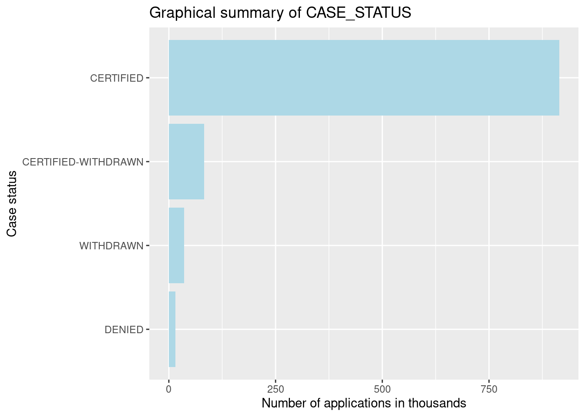
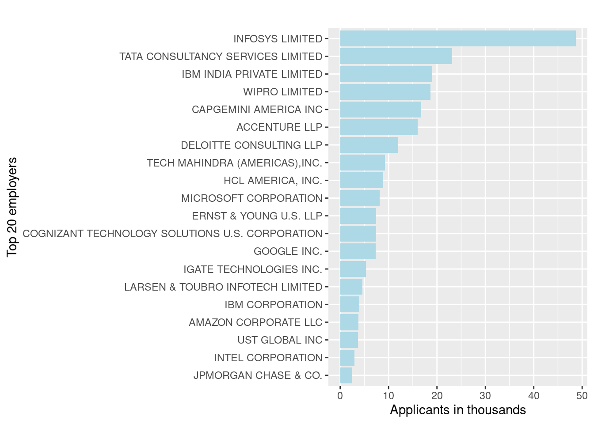
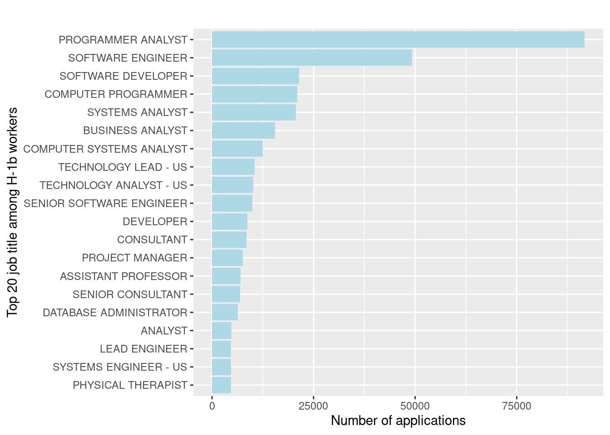
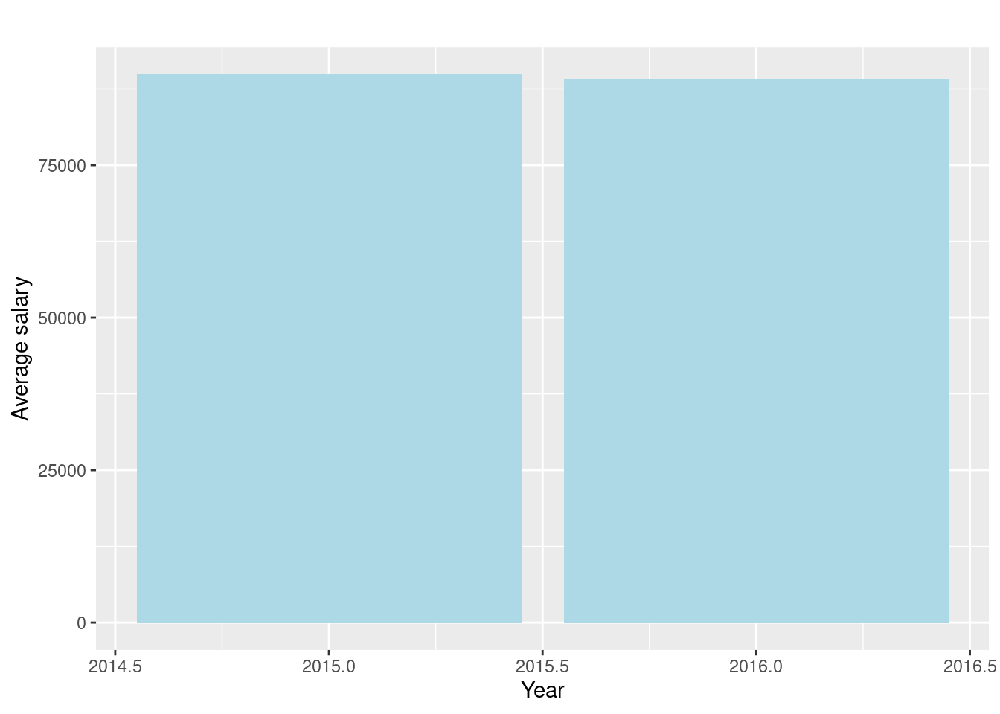
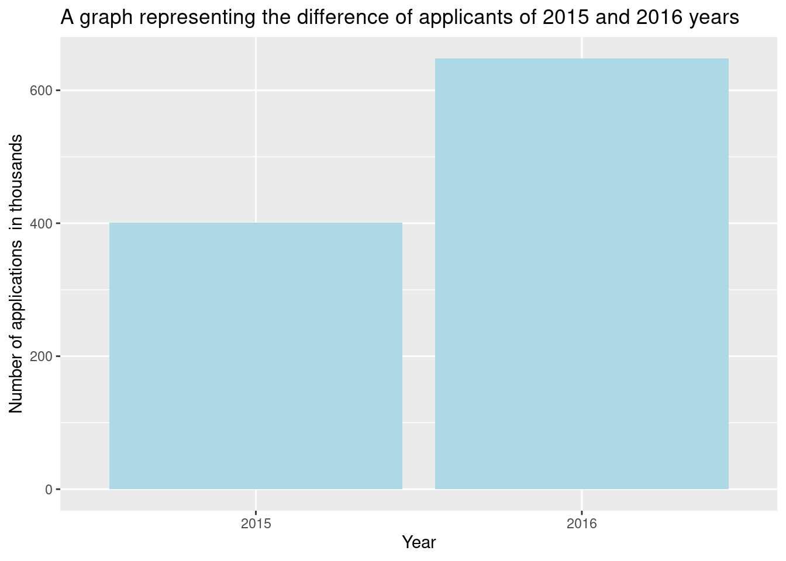

Warning: I have divided the modified dataset with ~1 million variables into two nearly even datasets to be able to upload them on GitHub. Thus, some of the statistical summaries might not match with the statements in this report. These inconsistencies will not affect results in Stage Three and Four. Please email me at abbas070@umn.edu if you would like the original HTML webpage of this stage with correct summaries.
Using a vast dataset from the Office of Foreign Labor Certification, I will conduct a detailed study of the H-1B visa work market for this project (OFLC). In this analysis, I will be looking specifically for H1B employees in the United States, and as a result will conclude on which part of the United States offers the most jobs for H-1B qualified specialists, and whether there was an increase or decrease of such job offering through 2015-2016.
1. What are the variables called? There are 10 columns in the dataset: case_status, employer_name, soc_name, job_title, full_time_position, prevailing_wage, year, worksite, lon(longitude of workcite), lat(latitute of workcite)
2. What do they mean?
X1: which is the just the count of the rows;
CASE_STATUS: Status associated with the last significant event or decision, Valid values include “Certified,” “Certified-Withdrawn,” Denied,” and “Withdrawn”;
EMPLOYER_NAME: Name of employer submitting the H1-B application, used in comparing salaries and number of applications of various employers;
JOB_TITLE: Title of the job using which we can filter specific job positions for e.g., Data Scientist, Data Engineer etc;
SOC_NAME: The occupation code for the employment;
FULL_TIME_POSITION: Whether the application is for a full-time position of for a part-time position;
PREVAILING_WAGE: The prevailing wage for a job position is defined as the average wage paid to similarly employed workers in the requested occupation in the area of intended employment;
YEAR: The application year;
WORKSITE_CITY/WORKSITE_STATE: The foreign worker’s intended area of employment;
lon: Longitude of the employer worksite;
lat: Latitude of the employer worksite
STATE: Names of states in the United States
| X | CASE_STATUS | EMPLOYER_NAME | SOC_NAME | JOB_TITLE | FULL_TIME_POSITION | PREVAILING_WAGE | YEAR | WORKSITE | lon | lat |
|---|---|---|---|---|---|---|---|---|---|---|
| 1 | CERTIFIED-WITHDRAWN | UNIVERSITY OF MICHIGAN | BIOCHEMISTS AND BIOPHYSICISTS | POSTDOCTORAL RESEARCH FELLOW | N | 36067.0 | 2016 | ANN ARBOR, MICHIGAN | -83.74304 | 42.28083 |
| 2 | CERTIFIED-WITHDRAWN | GOODMAN NETWORKS, INC. | CHIEF EXECUTIVES | CHIEF OPERATING OFFICER | Y | 242674.0 | 2016 | PLANO, TEXAS | -96.69889 | 33.01984 |
| 3 | CERTIFIED-WITHDRAWN | PORTS AMERICA GROUP, INC. | CHIEF EXECUTIVES | CHIEF PROCESS OFFICER | Y | 193066.0 | 2016 | JERSEY CITY, NEW JERSEY | -74.07764 | 40.72816 |
| 4 | CERTIFIED-WITHDRAWN | GATES CORPORATION, A WHOLLY-OWNED SUBSIDIARY OF TOMKINS PLC | CHIEF EXECUTIVES | REGIONAL PRESIDEN, AMERICAS | Y | 220314.0 | 2016 | DENVER, COLORADO | -104.99025 | 39.73924 |
| 5 | WITHDRAWN | PEABODY INVESTMENTS CORP. | CHIEF EXECUTIVES | PRESIDENT MONGOLIA AND INDIA | Y | 157518.4 | 2016 | ST. LOUIS, MISSOURI | -90.19940 | 38.62700 |
| 6 | CERTIFIED-WITHDRAWN | BURGER KING CORPORATION | CHIEF EXECUTIVES | EXECUTIVE V P, GLOBAL DEVELOPMENT AND PRESIDENT, LATIN AMERI | Y | 225000.0 | 2016 | MIAMI, FLORIDA | -80.19179 | 25.76168 |
| 7 | CERTIFIED-WITHDRAWN | BT AND MK ENERGY AND COMMODITIES | CHIEF EXECUTIVES | CHIEF OPERATING OFFICER | Y | 91021.0 | 2016 | HOUSTON, TEXAS | -95.36980 | 29.76043 |
| 8 | CERTIFIED-WITHDRAWN | GLOBO MOBILE TECHNOLOGIES, INC. | CHIEF EXECUTIVES | CHIEF OPERATIONS OFFICER | Y | 150000.0 | 2016 | SAN JOSE, CALIFORNIA | -121.88633 | 37.33821 |
| 9 | CERTIFIED-WITHDRAWN | ESI COMPANIES INC. | CHIEF EXECUTIVES | PRESIDENT | Y | 127546.0 | 2016 | MEMPHIS, TEXAS | NA | NA |
| 10 | WITHDRAWN | LESSARD INTERNATIONAL LLC | CHIEF EXECUTIVES | PRESIDENT | Y | 154648.0 | 2016 | VIENNA, VIRGINIA | -77.26526 | 38.90122 |
There were a couple transformations performed since last stage in preparation for future steps. First, I have trimmed the data to 2015 and 2016 years only to keep only the most relevant information available. Second, I have added a new column to the dataset - STATES - which serve as state names, in accordance with WORKCITY. Becuase a WORKCITE column contains both state names and city names, it would be problematic to perform data visualization on coropleth leaflet map, since it only takes states names. Because I am planning on making a leaflet map, I had to derive state names from the WORKCITE column and make a separate column for that. Due to the size of the data, I decided to perform the data transformation directly in Excel, and then uploaded an updated file into R using Upload button.
In addition, I have set to myself to make two coropleth maps - one about density of applicants per state, and the other one about the average wage per state.
Due to the size of data, to count applicants from each state and find average of wages per state, I decided to perform these manipulations in Excel and created two new sub-tables called “AppCount” and "AvgWage". When I extracted states names from the WORKCITE column, I realized that each state is now attached to each row, with its own values. This gave me good grounds to use a COUNTIF function to count the overlapping states and thus found how many times each state repeats. I have then transformed this numeric values into another column called ApplicationCount and imported a new dataset - with States and ApplicationCount columns - into R, using Upload button. For finding an average of wages per state, I used AVERAGEIF function in Excel. Since STATE column was in the same order as PREVAILING_WAGE, I connected them both and derived an average (excluding 0s and NAs). Since the tables were already in .csv format, it didn’t cause any issues.
Numeric summaries
The data has 997,411 records with 12 columns (variables) each:
c(nrow(df),ncol(df))## [1] 1048575 11The following variables have NAs: JOB_TITLE, FULL_TIME_POSITION, lon, lat, EMPLOYER_NAME, PREVAILING_WAGE, SOC_NAME
sapply(df,function(c){any(is.na(c))})## X CASE_STATUS EMPLOYER_NAME SOC_NAME
## FALSE FALSE TRUE TRUE
## JOB_TITLE FULL_TIME_POSITION PREVAILING_WAGE YEAR
## TRUE TRUE TRUE FALSE
## WORKSITE lon lat
## FALSE TRUE TRUEThere are 54736 NA entries in the entire dataset. A breakdown of NAs in individual columns will be shown below.
sum(is.na(df))## [1] 59163CASE_STATUS
Numeric summary
summary(df$CASE_STATUS)## Length Class Mode
## 1048575 character charactertable(df$CASE_STATUS)[1:10]##
## CERTIFIED CERTIFIED-WITHDRAWN DENIED WITHDRAWN
## 914251 83160 15670 35494
## <NA> <NA> <NA> <NA>
##
## <NA> <NA>
## length(unique(df$CASE_STATUS))## [1] 4Graphical summary
caseSum <- df %>% filter(!is.na(CASE_STATUS)) %>% group_by(CASE_STATUS) %>% summarise(loc = length(lat))
ggplot(data = caseSum, aes(x = reorder(CASE_STATUS,loc), y = loc/1000)) + geom_bar(stat="identity",fill="lightblue", fill="grey") + coord_flip() +
labs(title="Graphical summary of CASE_STATUS", x ="Case status", y = "Number of applications in thousands")
EMPLOYER_NAME
Numeric summary
summary(df$EMPLOYER_NAME)## Length Class Mode
## 1048575 character charactertable(df$EMPLOYER_NAME)[1:10]##
## ? WHAT IF! USA LIMITED ?WHAT IF! USA LIMITED
## 2 4
## .CLUB DOMAINS, LLC 'K' LINE LOGISTICS USA INC.
## 4 1
## (AMBI)DEXTROUS ASSET MANAGEMENT LLC @BUSINESS, INC.
## 1 9
## "K" LINE AMERICA "K" LINE AMERICA, INC.
## 1 1
## &TV COMMUNICATIONS INC &TV COMMUNICATIONS INC.
## 3 5length(unique(df$EMPLOYER_NAME))## [1] 100248Graphical summary
We can see from the graph top 20 employers hiring H1-B workers in 2015 and 2016, 3 of which are Infosys Limited, Tata consultancy services limited, and Wipro limited.
EmployerData <-
df %>% group_by(EMPLOYER_NAME) %>% summarise(loc = length(lat)) %>% top_n(n = 20) %>% ungroup()
ggplot(data = EmployerData, aes(x = reorder(EMPLOYER_NAME, loc), y = loc / 1000)) + geom_bar(stat = "identity",fill="lightblue") + coord_flip() +
labs(title = "", x = "Top 20 employers", y = "Applicants in thousands")
SOC_NAME
Numeric summary
summary(df$SOC_NAME)## Length Class Mode
## 1048575 character charactertable(df$SOC_NAME)[1:10]##
## 13-2011.01
## 1
## 15-1132
## 1
## 15-1199.01
## 1
## 15-1199.01 SW QUALITY ASSURANCE ENGNRS & TESTERS
## 1
## 15-1199.08, BUSINESS INTELLIGENCE ANALYSTS
## 1
## 17-2051
## 1
## 17-2072
## 1
## 27-3031
## 1
## 29-1064.00-OBSTETRICIANS AND GYNECOLOGISTS
## 1
## ACCOUNTANT
## 2length(unique(df$SOC_NAME))## [1] 1199There is no graphical summary since SOC_NAME serves just as an occupational code, and doesn’t mean to carry any insightful meaning
JOB_TITLE
Numeric summary
summary(df$JOB_TITLE)## Length Class Mode
## 1048575 character charactertable(df$JOB_TITLE)[1:10]##
## MIDDLEWARE ADMINISTRATION. BUSINESS ANALYST
## 2 1
## BUSINESS INTELLIGENCE ANALYST ORACLE APPS DBA
## 1 1
## PROJECT MANAGERS QA ANALYST
## 1 1
## SHAREPOINT/SQL DEVELOPER SOFTWARE ENGINEER
## 1 25
## SOFTWARE PROGRAMMER SOFTWARE TEST ENGINEER
## 14 1length(unique(df$JOB_TITLE))## [1] 120864Graphical summary
As we can see from the graph, one of the most popular job titles from 2015-2016 are Programmer Analyst, Software Engineer, Software Developer, Computer Programmer, and more.
title_jobs <- df %>% group_by(JOB_TITLE) %>% summarise(loc = length(lat)) %>%
top_n(n=20) %>% arrange(loc) %>% ungroup()
ggplot(data = title_jobs, aes(x = reorder(JOB_TITLE,loc), y = loc)) +
geom_bar(stat="identity",fill="lightblue") +
coord_flip() +
labs(title="", x ="Top 20 job title among H-1b workers", y = "Number of applications")
FULL_TIME_POSITION
Numeric summary
summary(df$FULL_TIME_POSITION)## Length Class Mode
## 1048575 character charactertable(df$FULL_TIME_POSITION)[1:10]##
## N Y <NA> <NA> <NA> <NA> <NA> <NA> <NA> <NA>
## 361829 686745length(unique(df$FULL_TIME_POSITION))## [1] 3Graphical summary
From this graph, we can see that more than 60% of applicants are employed full-time, and around 33% are part-time workers.
ggplot(data = subset(df, !is.na(df$FULL_TIME_POSITION)),
aes(y = (..count..)*100/1048575, x = FULL_TIME_POSITION, fill = FULL_TIME_POSITION)) +
geom_bar(fill="lightblue") +
labs(x= "Full time position (yes/no?)", y = "Petitions made in percentage") +
theme(legend.position = "none") +
scale_y_continuous(breaks = seq(0,100,10))PREVAILING_WAGE
Numeric summary
summary(df$PREVAILING_WAGE)## Min. 1st Qu. Median Mean 3rd Qu. Max. NA's
## 0 56368 66518 89427 82472 329139200 4table(df$PREVAILING_WAGE)[1:10]##
## 0 35 1278.94 2783 3900 12000 12584 15000 15080 15222
## 17 1 1 1 1 1 4 1 26 1Graphical summary
The following graph illustrates that an average salary in both 2015 and 2016 is more than $60k, and that it there is a slight raise in 2016.
wages <- df %>% filter(!is.na(PREVAILING_WAGE)) %>% filter(PREVAILING_WAGE>0) %>% filter(!is.na(YEAR)) %>%
group_by(YEAR) %>% summarise(avg = mean(PREVAILING_WAGE))
ggplot(data = wages, aes(x = YEAR, y = avg)) +
geom_bar(stat="identity",fill="lightblue") +
labs(title="", x ="Year", y = "Average salary", main="Prevailing wages in 2015 and 2016")
<strongYEAR
Numeric summary
summary(df$YEAR)## Min. 1st Qu. Median Mean 3rd Qu. Max.
## 2015 2015 2016 2016 2016 2016table(df$YEAR)[1:10]##
## 2015 2016 <NA> <NA> <NA> <NA> <NA> <NA> <NA> <NA>
## 400772 647803Graphical summary
From here we can see that there was an increase of about 200,000 total H-1B applicants from 2015 to 2016
years <- df %>% filter(!is.na(YEAR)) %>% group_by(YEAR) %>% summarise(loc = length(lat))
ggplot(data = years, aes(x = reorder(YEAR,loc), y = loc/1000)) + geom_bar(stat="identity", fill="lightblue") +
labs(title="A graph representing the difference of applicants of 2015 and 2016 years", x ="Year", y = "Number of applications in thousands")
WORKCITE
Numeric summary
summary(df$WORKSITE)## Length Class Mode
## 1048575 character charactertable(df$WORKSITE)[1:10]##
## , CALIFORNIA , FLORIDA , ILLINOIS , MARYLAND
## 4 1 1 1
## , MINNESOTA , MISSOURI , NEW YORK , NORTH CAROLINA
## 1 1 1 1
## , SOUTH CAROLINA , TEXAS
## 1 1Graphical summary
I will be presenting a coropleth leaflet map on density of applicants by state in the next stage.
STATE
Numeric summary
I will present geographical data using leaflet package in later stages.
length(table(df$STATE))## [1] 0A sanity check can be done on the years, to check that only entries from the years 2015 or 2016 are in the data set. Since those are the only years’ data that this project will be working with.
unique(df$YEAR)## [1] 2016 2015We can perform a sanity check for the CASE_STATUS variable to be certain that only there are only expected values in the data frame.
unique(df$CASE_STATUS)## [1] "CERTIFIED-WITHDRAWN" "WITHDRAWN" "CERTIFIED"
## [4] "DENIED"A sanity check on the ID variable can be done to check that no two entries or rows have the same ID.
A return of NULL is what we would want for this, because we do not want to see any ID that is in the variable more than once.
names(table(df$X1))[table(df$X1) > 1]## NULLA sanity check on the FULL_TIME_POSITION variable can be done to check that there are no entries other than yes (Y), no (N) , or NA.
unique(df$FULL_TIME_POSITION)## [1] "N" "Y" NAA sanity check on the PREVAILING_WAGE variable can be done to make sure there are no negative values (not including <strong<NA’s ) in the variable. This can be done by adding up all negative values in the variable, which should add up to 0, since no negative values are expected.
sum(na.omit(df$PREVAILING_WAGE) < 0)## [1] 0There are many correlations that I can think of on this dataset. The fist one is that location influences the wage H-1B workers are receiving, such as the highest wage would be coming on major states such as California or New York. I have also observed that most of the employers are usually technology companies, and most of the positions offered to H-1B workers are technically-oriented titles, such as Software Engineer. I would love to discuss this more in the final stage.
I don’t see any major outliers in the data, because everything is within a reasonable scope.
For the final stage, I would love to make a statistical report and discuss several correlations using graphs, as well as applying other techniques such as illustrating data on interactive maps, specifically with choropleth with leaflet package. In addition, I could utilize word cloud and text mining techniques for some illustrations.
I have been often using this tutorial when building graphs using library(ggplot) package.